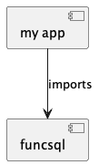

Components¶
This isn’t in PYPI, so you can’t simply PIP-install it.
You need to clone the GitHub repo. There are two ways to make use of this:
python -m pip install -e /path/to/srcexport PYTHONPATH=/path/to/src
Both work. Choose one.
Your applications will look like this.

That’s about it. We look at app code in the Demonstration Code and Tutorial sections.
We’ll look at the funcsql code in the funcsql Code section.